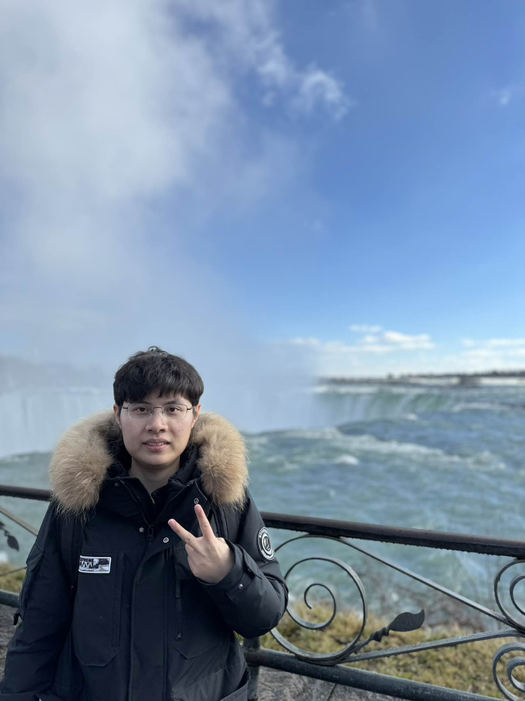
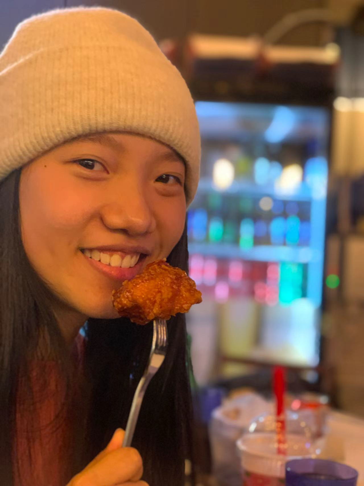
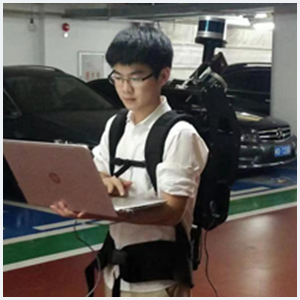
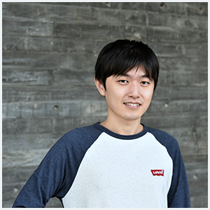
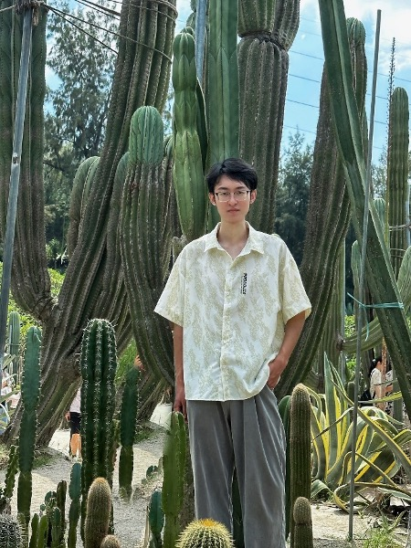

实验室简介
Introduction
陈一平教授领衔的“三维时空人工智能实验室”（3D Spatiotemporal AI Lab）隶属于中山大学遥感科学与技术学院，坐落于广东珠海。实验室面向激光雷达遥感与智能三维点云理解的前沿需求，聚焦三维点云表征学习、遥感要素提取、三维场景生成与时空大模型等关键技术研究，并探索其在实景三维与数字孪生、城市与森林精细化测绘、生态环境可持续发展等领域的应用。
课题组致力于多平台、多源传感数据融合，构建稳健可泛化的三维场景理解方法与工程化流程。实验室负责人陈一平教授入选国家级青年人才，共有博硕士研究生10人，本科生8人。近年来实验室在 ISPRS JPRS、CVPR、JAG、IEEE TGRS 等顶刊与顶会发表100余篇高水平论文，并主持或承担国家自然科学基金面上/青年项目，部委基金/预研项目，与广东省面上项目等十余项科研项目，授权国家发明专利20余项。
团队成员获中国遥感应用协会青年女科学家奖特等奖，中国测绘学会测绘科学技术奖二等奖，中国地理信息产业协会科技进步奖一等奖，北京市技术发明一等奖等奖励。实验室与加拿大滑铁卢大学、挪威科技大学、香港大学等高校保持密切国际合作，毕业生均入职一线科技企业与遥感测绘相关政府单位，或在国际顶尖高校深造。
教师
Teacher
博士生
PhD Students

孙文涛
方向：点云交互式分割
罗阳
方向：激光雷达点云智能解译
柯文宇
方向：三维重建与生成
硕士生
Master Students
本科生
Bachelor Students
陈桓

陈春松
黄皓凌
邓杏儿
侯懿宸
王梓佳
任益澜
虞启淇
交流访问
Visitors
隋佳璐
访问博士生，香港大学博士生

徐禧
访问硕士生，澳门科技大学硕士生
毕业生
Graduates
Naftaly Wambugu
2018级博士生
深圳大学建筑与城市规划学院博士后
刘小雪
2018级博士生
贵州师范大学大数据与计算机科学学院副教授

罗智鹏
2018级博士生
闽南师范大学计算机学院副教授

黄鹏頔
2015级博士生
深圳大学计算机与软件学院副研究员

张帅
2021级硕士生
香港科技大学（广州）博士生
谢相依
2021级硕士生
广东省佛山市南海区交通运输局
丰慧芳
2021级博士生
西华大学计算机与软件工程学院 硕士生导师
马津
2021级博士生